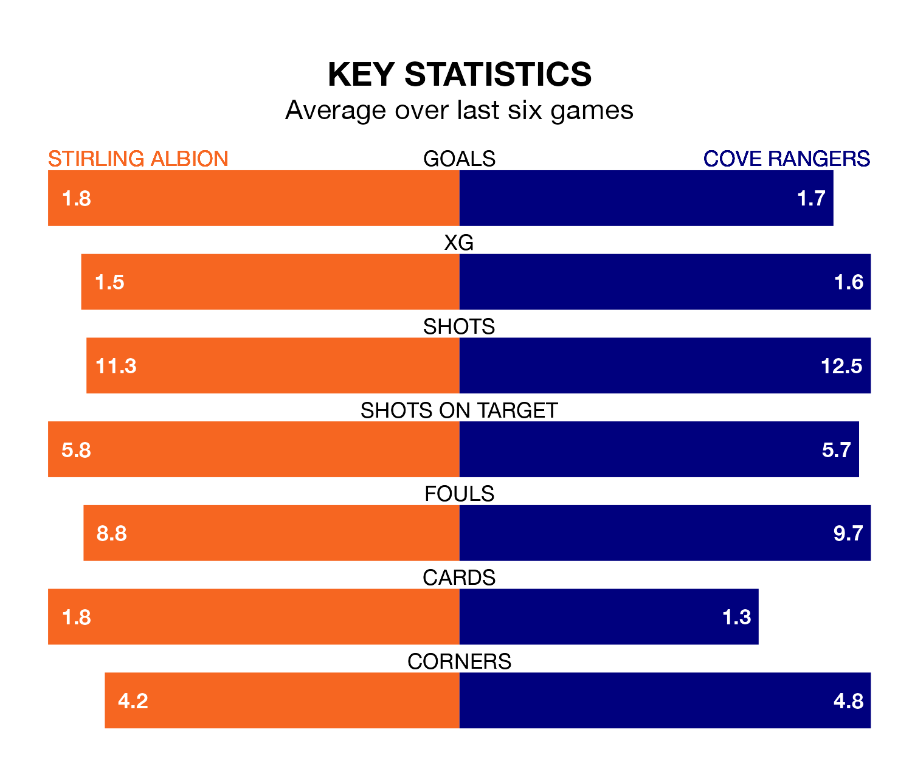

Cove Rangers travel to the Forthbank Stadium for Saturday's match against Stirling Albion looking to bounce back from defeat last time out in League One.
The Wee Rangers, who sit third in the league after 22 games, fell to a 2-0 home defeat to Queen of the South on January 27.
They face a Stirling side who picked up a win in their last match, a 5-0 victory against Kelty Hearts, and who sit seventh in the table.
In Rumarn Burrell, Cove have the league's most on-form striker so far this season. He has notched 17 goals in 22 appearances.
His goal rate of one every 111 minutes is quicker than that of Josh Cooper, Stirling's top scorer with a goal every 135 minutes, and a total of six goals in 16 games.
With 21 goals in 20 games so far this season, Albion are the league's lowest scorers with 1.0 goals per game. And they are conceding more than average, letting in 32 goals at a rate of 1.6 per game.
Rangers, meanwhile, are above average scorers, with 1.6 goals per game, compared to a league average of 1.5. They have conceded 1.4 goals per game.
In the last 10 years, Stirling and Cove have played each other on seven occasions. Stirling won one of them, Cove five, and they drew once.
On average, the Binos scored 1.1 goals and the Wee Rangers 2.7 in those matches.
Their last meeting was on November 25, when Cove won 2-0 away.
The Binos are in reasonable form in League One, with three wins and two draws from their last six games.
With a win and two draws over that period, the Wee Rangers' form is much worse – they have taken five points from 18, compared to the hosts' 11.
Saturday's match will be refereed by Iain Snedden, who has taken charge of five League One games so far this season, issuing one red card and booking 23 players. He has awarded two penalties.
He is yet to oversee a match featuring either Stirling or Cove this season.
Updated: 14:12 (UTC), 02/02/24